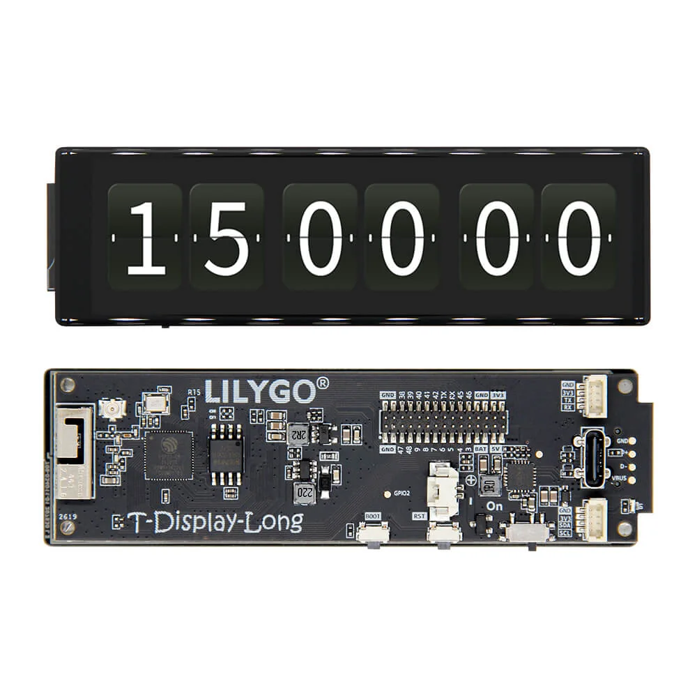

T-Display S3 Long
LilyGO · LilyGO T-Display S3 Long – ESP32-S3 3.4" 180×640 QSPI bar touch display
T-Display S3 Long is a 3.4" 180x640 TFT Capacitive touch ESP32 display board by LilyGO based on the ESP32-S3 with 16MB flash, 8MB PSRAM.
Features, ports & interfaces
- QSPI display
- Capacitive touch (CST3530)
- 8 MB PSRAM
- 16 MB flash
- microSD (TF) card slot
- Wi-Fi 4 (802.11 b/g/n, 2.4 GHz) – version from the ESP32-S3 datasheet
- Bluetooth 5 (LE) – version from the ESP32-S3 datasheet
- Buttons: Boot + Reset, battery switch
Specifications
| Parameter | Value | Source |
|---|---|---|
| Screen size | 3.4" | source |
| Resolution | 180x640 | source |
| Panel | TFT | source |
| Shape | Rectangular | |
| Display interface | QSPI | source |
| Touch | Capacitive | source |
| Touch controller | CST3530 | source |
| MCU / SoC | ESP32-S3R8 (dual-core LX7) | source |
| MCU family | ESP32-S3 | source |
| Flash | 16MB | source |
| PSRAM | 8MB | source |
| Wi-Fi | Wi-Fi 802.11 | source |
| Bluetooth | BLE 5 + BT mesh | source |
| Category | LilyGO (T-series) | |
| Buttons | Boot + Reset, battery switch | source |
| Colors | 565, 666 | source |
| SD / TF | TF card | source |
| Vendor | LilyGO |